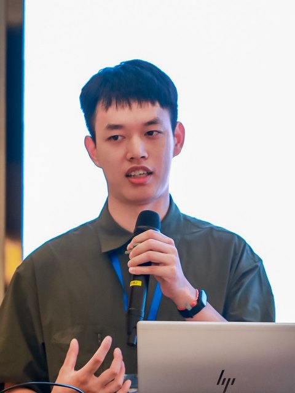

AI for economic systems
We use autonomous and multi-agent AI to model economic actors, simulate economic systems, evaluate policy, and solve complex decision problems.
DAI 2026 Workshop · Full day · Non-archival
AI Agents for Economic Decision-Making, Economic Simulation, and Mechanism Design
Economic systems are decentralized multi-agent environments. We bring together distributed AI, computational economics, game theory, and mechanism design around a single bidirectional research agenda: using AI agents to understand and optimize economic systems, and using economic theory to design efficient, robust, and socially beneficial agentic economies.

Agentic economics is an emerging field. It studies — and designs — the economic behavior, interactions, and institutions that involve autonomous AI agents. The field runs in two complementary directions, and we treat them as one agenda.
We use autonomous and multi-agent AI to model economic actors, simulate economic systems, evaluate policy, and solve complex decision problems.
We study AI agents as economic actors — and the markets, incentives, institutions, and governance mechanisms that human–agent and agent–agent economies need.
Work at this intersection is growing fast, but it is scattered across separate communities in AI and economics. Few venues look at both sides at once: using AI agents to study economic systems, and understanding the economic consequences of AI agents as market participants. We want to bring these communities together, identify shared research questions and evaluation practices, and turn that into lasting collaboration.
We welcome contributions on topics including, but not limited to:
Two 45-minute keynotes anchor the programme, one from each side of the agenda. Speakers are being confirmed and will be announced here.
To be announced
Invited speaker · 45 min
To be announced
Invited speaker · 45 min
A full-day format with seven research talks, a poster session, and a closing panel. Speaker names and contributed talk titles will be added as they are confirmed.
All times local (Hong Kong, UTC+8).
The committee is structured to cover the methodological and disciplinary foundations of agentic economics, connecting the AI and economics communities across agent modeling, multi-agent interaction, economic analysis, digital markets, and institutional design.

Supported by xxx xxx xxx and volunteers.
All workshop correspondence should be directed to the lead organizer.
Qirui Mi · School of Computer Science and Artificial Intelligence, Shanghai University of Finance and Economics, Shanghai 200433, China